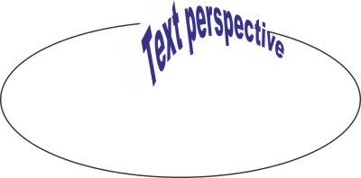

Как создать текст по окружности с перспективой?
Sinto / 13.08.2013, 14:14
Форум:
Добрый день, поделитесь опытом, пожалуйста - возможно ли создать текст, расположенного по дуге так, чтобы он был еще и в перспективе? То есть начало фразы - большие буквы, потом - к концу плавно на уменьшение. Большое спасибо!
P.S. Нужен именно эффект перспективы, чтобы начальные буквы были несколько вытянуты по отношению к норме.
делаете текст по дуге - разъединяете, кривите - далее варианты с Envelope и/или Extrude

в данном случае - был создан текст по внешнему контуру эллипса - потом был применен эффект Extrude (Выдавливание) - при этом был задан один шаг - заливка боковых поверхностей сделана белой - направление ЗД скорректировано - затем эффектом Envelope (как в русском варианте ??? Конверт?) добавлено ещё перспективы по вкусу
В русском варианте "Оболочка"
dastin , спасибо, но результат в данном случае почти непредсказуем, я тоже полдня развлекалась подобным образом. Задача в том, чтобы буквы остались на ровной дуге, причем первая буква (самая большая) не заваливалась бы вправо, а была бы просто чуть вытянута вверх. Уже весь мозг сломала ((
Как вариант Убывающий кегль вдоль пути (также, см. комментарии)
Skew (Скос) вам в руки - сделайте прямо после экструзии - а затем когда после доберетесь до Энвелопе - узлы лишние поудаляйте - а оставшиеся угловые сделайте типа Line - (Прямые?) - результат станет весьма управляем и предсказуем
Спасибо, ребята! dastin, тут случай особенный. Вручную такие оберрации в моем случае не прокатят. Будет 2 строки, 1 под другой и текст должен идеально сидеть на дуге и идеально убывать. Похоже в Кореле, кроме как тягать кривые, не получится. (( Санчо, попоробовала Ваш макрос sToolsShape.Oculist- почему-то только в Х3 встал, в Х5 - ни в какую)) еще бы у него была возможность искажения добавлять в виде персперктивы - вот самое бы оно!!!!!
пример в студию
Верхней строкой будет довольно громоздкая фраза на другом языке, и вся эта красота вокруг сковороды по полукругу.
это не пример ... это иллюстрация .... без точного количества символов в фразах - картинка не имеет смысла
Страницы